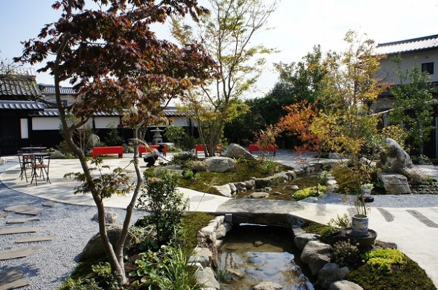
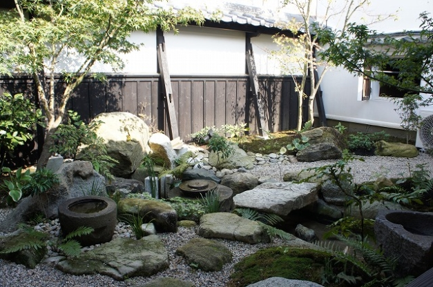
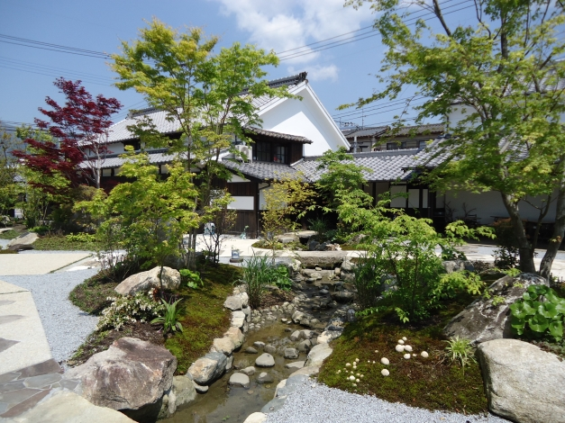
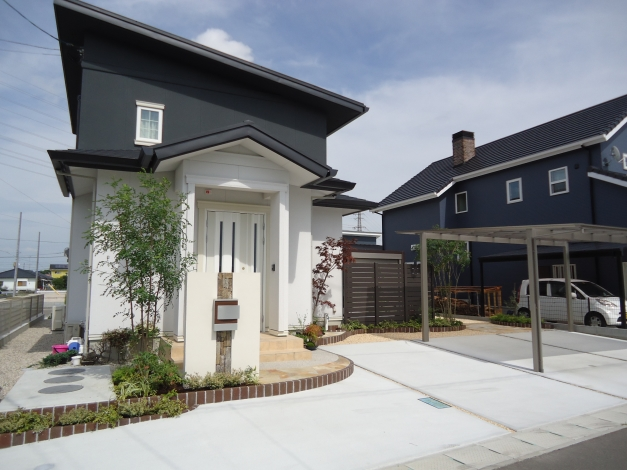
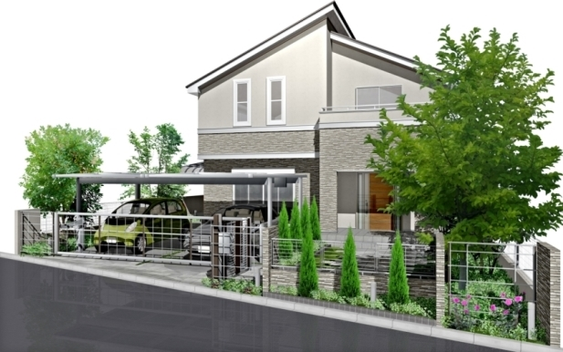
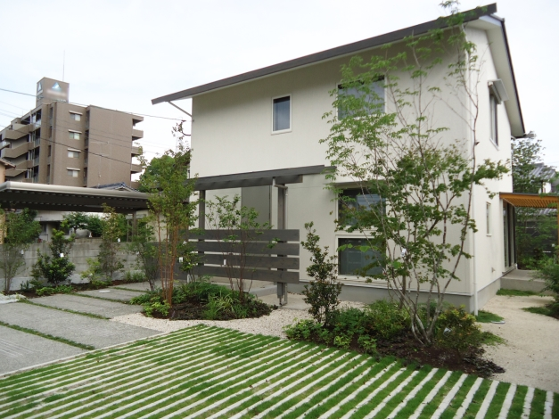
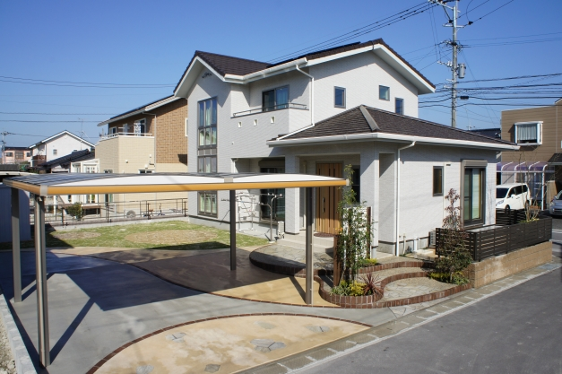
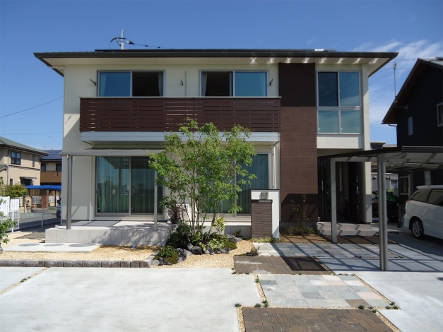
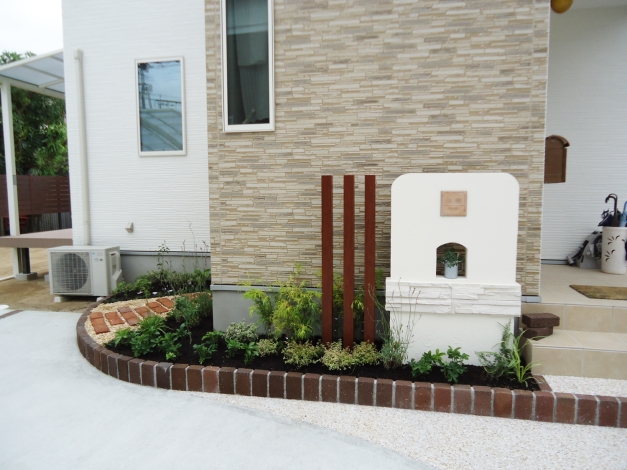
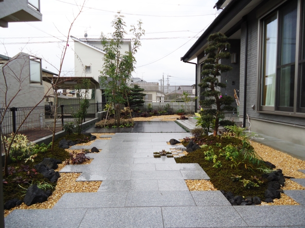

佐賀県のエクステリア・造園工事はお任せください
※初回のお見積もり無料



ザ・シーズン ブランド コンセプト
G-craftは、創業30年以上の実績を持つ「山田造園」が展開するエクステリア・外構専門ブランドです。
オーダーメイドでお客様の外構・庭への思いにお応えする、こだわりのデザイン。伝統的な作法とモダンなスタイルを融合させ、ご家族のライフスタイルに合わせた理想の空間をご提案いたします。

こだわりの施工事例一覧
モダンなエクステリア
ナチュラルモダンな外構
シンプルな雑木の庭

オープン外構

和風モダンなお庭

エクステリアリフォーム
ニュース一覧
経験豊富なデザイナーが、お客様の理想を形にします。お見積り・ご相談は無料です。